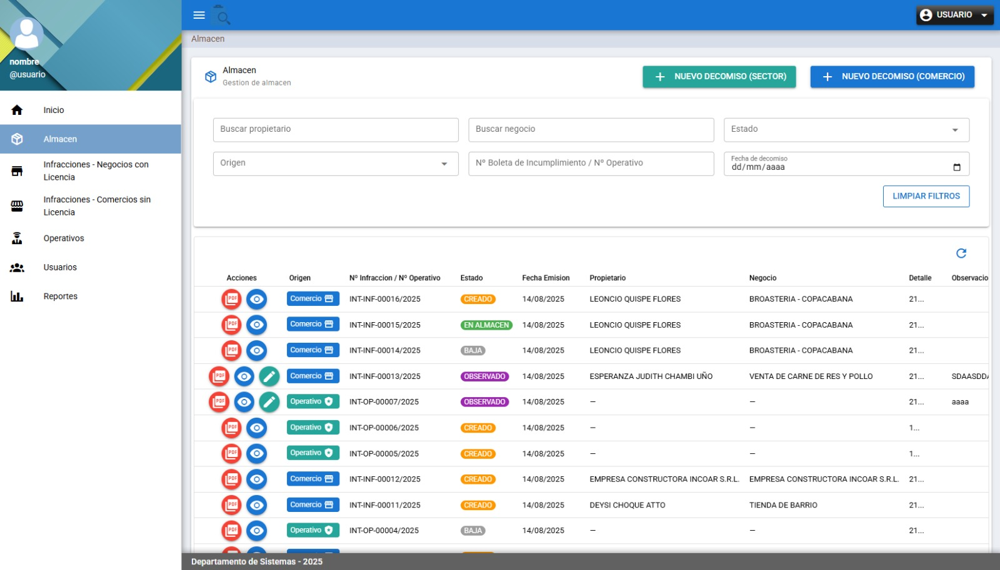
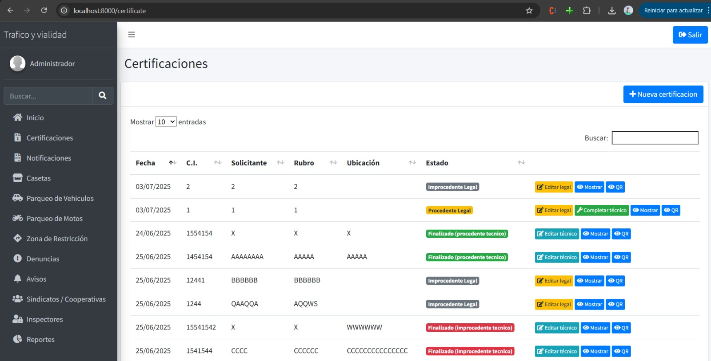
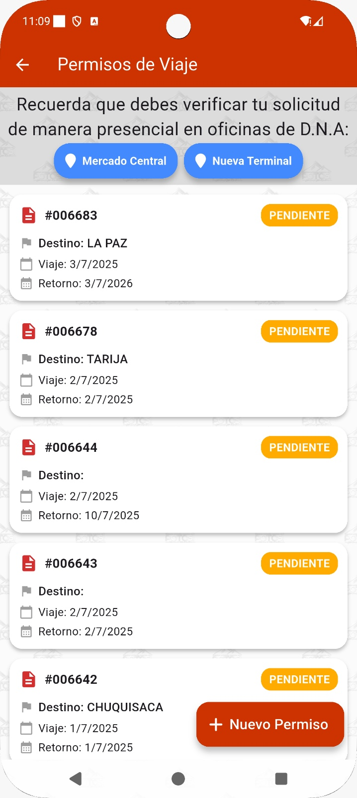

Ingeniera de Sistemas con experiencia en desarrollo de aplicaciones web y participación en proyectos institucionales utilizando tecnologías como Vue, Quasar, NestJS y PostgreSQL.
Ingeniera de Sistemas enfocada en el desarrollo de interfaces modernas y aplicaciones web eficientes. He participado en el desarrollo de sistemas institucionales en producción, trabajando tanto en frontend como backend dentro de equipos ágiles.
Participé en el desarrollo de un sistema de registro y control de infracciones y decomisos. Trabajé con Vue 3, Quasar Framework, Pinia, NestJS y PostgreSQL, implementando formularios complejos, tablas dinámicas y generación de documentos PDF.
Colaboré en el desarrollo de un sistema web de gestión documental, trabajando con HTML, CSS, JavaScript, Angular y Java Spring Boot.

Sistema web institucional para el registro y control de infracciones y decomisos desarrollado con Vue 3, Quasar y NestJS.

Mantenimiento y evolución de sistema web institucional desarrollado con Vue 2, Bootstrap y Laravel.

Aplicación móvil institucional donde colaboré en el módulo de permisos de viaje utilizando Flutter y GetX.
Email: mercedesodn17@gmail.com
GitHub: noeliamercedesortega
LinkedIn: noeliamercedesortega